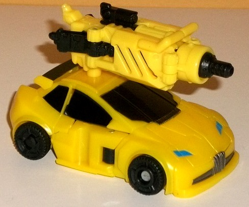
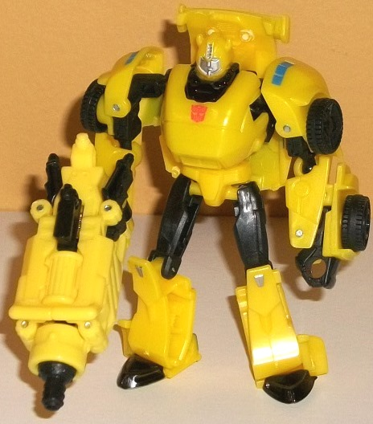

Allegiances
: Autobot
Price
: $15 (U.S.)
(NOTE: Because this set is composed of repaints,
this is not a full-blown review. This mainly covers any changes made to
the set and the color scheme, and merely compares it to the original versions
of these molds. For a review on the deluxe AoE modern "Concept Camaro"
Bumblebee, go
here
. For a review on "Thrilling
30" Generations Legends Bumblebee-- the mold used for "Then" Bumblebee--
go
here
.)
 Bumblebee
("Now")
Bumblebee
("Now")
Size
: Deluxe
Difficulty of Transformation
: Medium
Color Scheme
: Black, dull pale orangish
yellow, moderately light orangish "cheese" yellow, transparent light blue,
and some dark metallic silvery blue, silver, and light milky gray
Individual Rating
: 8.0
"Now" Bumblebee is exactly
identical to the mass release version of deluxe AoE "Concept Camaro" Bumblebee.
See the relevant link above for specifics.
 Bumblebee
("Then")
Bumblebee
("Then")


Size
: Legend
Difficulty of Transformation
: Easy
Color Scheme
: Yellow, black, and
some metallic gunmetal gray, silver, light metallic bluish silver, and
moderately light blue
Individual Rating
: 7.6
This version of Bumblebee
has-- more or less-- the same "feel" as Generations Legends Bumblebee w/
Blazemaster-- only without Blazemaster, of course. The general color layout
of yellow and black are the same, though there are some differences, even
if there's only enough to make this Bumblebee more of a "variant" compared
to having an outright genuine new color scheme when compared with the original.
The most obvious difference is that this Bumblebee doesn't have the "V"-shaped
red lines on the hood-- indeed, those paint apps are missing completely,
making 'Bee look a little plain Jane in vehicle mode. The light red paint
app on his robot chest is also missing from this version. The yellow plastic
is also just a TITCH lighter on this version-- honestly, I prefer the slightly
darker, more swirly yellow on the original, though this is a very minor
issue. There is some slight variance in the black paint placement, as well--
the front windows are painted as one window on this version, ignoring the
two dividers on the windshield molded into the toy that were taken into
consideration with the paint on the original release of this mold. The
top of the spoiler is also painted black on this version, unlike the original.
On some more minor notes, the taillights are a rather nice, moderately
light shade of blue on this release, compared with the light red on the
original, and I think the blue suits 'Bee a little better. The headlights
are also the same blue, though that's it as far as that color goes-- I
wish it was used for a little more, such as the eyes, which are actually
a very silvery shade of blue to the extent where it's hard to distinguish
them from the silver face in terms of color. Any other paint apps/colors
not mentioned are the same as on the original version.
"Then" Bumblebee has
no mold changes made to the core toy when compared to the original, but
in place of the Blazemaster Mini-Con is-- of all things-- a black-and-yellow
redeco of
DotM Jolt's Mechtech gun
. A nice
weapon, though a bit large scale-wise-- "Now" Bumblebee looks better holding
it, honestly.
The "Evolution of Bumblebee"
2-pack may not exactly be WOW-worthy-- what with one of the two being exactly
the same as the mass retail version and the other having only minor differences.
However, this 2-pack is the exact same price-- in some cases, CHEAPER--
than buying the mass-release deluxe AoE Bumblebee mold by itself. Solely
because of that, if you don't have the deluxe Concept Camaro 'Bee and want
it, definitely pick up this version as you get an extra Legends toy FOR
FREE. If you DO have the deluxe Concept Camaro 'Bee mold already, though,
there's no need to pick up this 2-pack.
Reviews by Beastbot